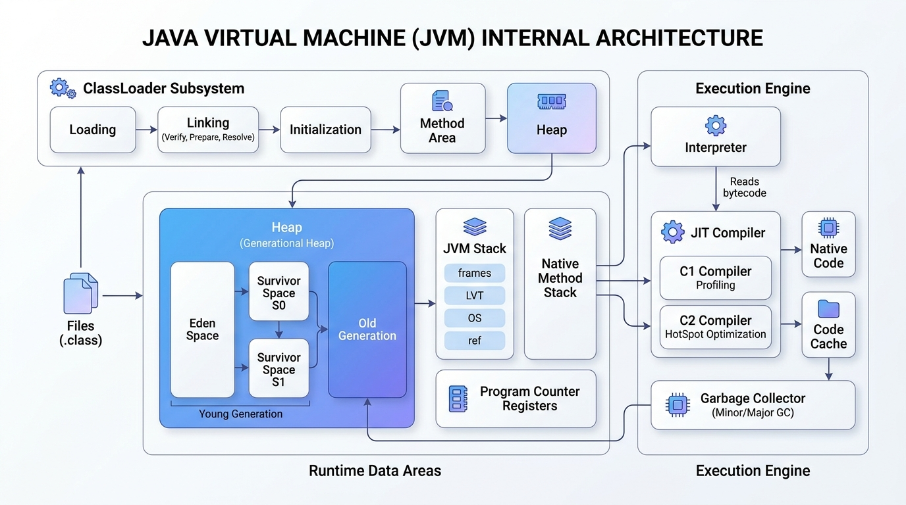
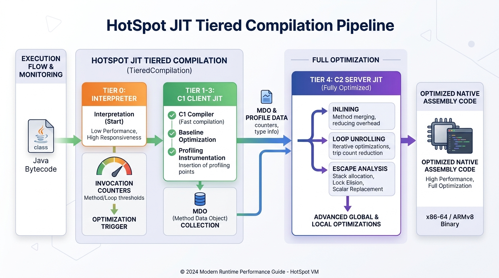

Inside the Java Virtual Machine: From Bytecode to Microsecond Execution
A clean, interactive architectural laboratory dissecting HotSpot VM internals — dynamic classloader sandboxing, generational garbage collection, bounded thread pool concurrency, and adaptive multi-tier JIT compilation.
Real-Time Virtual Machine Metrics
Direct instrumentation from java.lang.management.ManagementFactory sampling live heap allocation rates,
active thread states, and garbage collector pause durations.
Live JVM Heap Utilization Graph
Real-time memory allocation sampling from MemoryMXBeanLive Memory Allocation Lab
Allocate real heap blocks and observe automatic garbage collectionClassLoader Subsystem & 3-Phase Bytecode Verification
How the Java Virtual Machine dynamically discovers, verifies, and links executable classes into native Metaspace with parent-first delegation and strict memory isolation.
0xCAFEBABE magic header, proves instructions never underflow/overflow
the Operand Stack, and guarantees type safety before native compilation.Preparation: Allocates memory for static fields and initializes default zero values.
Resolution: Resolves symbolic references from the Constant Pool into direct memory pointers.
URLClassLoader instances, enabling third-party plugins (e.g. sample-plugin-1.0.0.jar)
to be loaded and unloaded at runtime without restarting the core server.

Runtime Data Areas: Thread-Private Stacks vs Managed Heap
Understanding the mechanical division of memory in the JVM: thread-isolated stack frames executing with zero garbage collection overhead versus the shared generational heap managing high-throughput object lifecycles.
JVM Thread Stacks (Per-Thread)
Each OS carrier thread receives an isolated stack frame memory block. Method invocations push new Stack Frames containing Local Variable Tables (LVT), Operand Stacks, and Frame Data. Frames unwind automatically upon method return in nanoseconds without GC pauses.
Young Gen (Eden & Survivor Spaces)
All newly instantiated objects and arrays are allocated in Eden Space via lock-free Thread-Local Allocation Buffers (TLABs). Minor GCs copy surviving objects between Survivor Spaces (S0 / S1), incrementing their tenuring age counter.
Tenured (Old) Generation
Objects that survive multiple minor GC cycles (default tenuring threshold: 15) are promoted to the Old Generation. Major / Full GC sweeps and compacts this memory region to prevent fragmentation and support enterprise long-lived state.
Metaspace (Native Class Metadata)
Replaces the legacy PermGen. Resides in native host virtual memory. Stores runtime class definitions, virtual method tables (vtables / itables), annotations, and the Constant Pool, scaling dynamically with available system RAM.
Program Counter (PC) Registers
Each active thread maintains a dedicated PC register tracking the memory address of the current JVM bytecode instruction being executed, enabling seamless thread preemption and context-switching across multicore CPUs.
Memory Safety & Compressed OOPs
HotSpot utilizes Compressed Ordinary Object Pointers (Compressed OOPs) to represent 64-bit heap references using 32-bit pointers, saving up to 40% memory bandwidth while strictly eliminating dangling pointers and double-free CVE vulnerabilities.
HotSpot Adaptive JIT Compilation Pipeline
How the HotSpot Execution Engine dynamically balances zero-startup latency with peak C++ native speed using tiered compilation, continuous runtime profiling, and advanced compiler optimizations.

- Method Inlining: Eliminates call frame overhead for frequent method calls.
- Loop Unrolling & Vectorization: Transforms loops into native SIMD/AVX instructions.
- Escape Analysis & Scalar Replacement: If an object does not escape a method, its fields are mapped to CPU registers/stack, bypassing Heap allocation completely!
- On-Stack Replacement (OSR): Replaces a running interpreted hot loop with native code mid-execution.
Interactive Systems Laboratory & Task Orchestrator
Test core runtime services in real time: trigger bounded thread pool execution, observe concurrent task states, and hot-load external plugins into Metaspace via custom ClassLoaders.
Bounded ThreadPool Task Engine
Cooperative task cancellation with bounded queue overflow protection| Task Definition | Category | Module Type | Engine State | Interactive Actions |
|---|
Architectural Showdown: Java HotSpot vs Native C++
An objective, nuanced comparison of the mechanical design decisions separating managed runtime architectures from compiled native binary execution.
dlopen). Maximum startup speed, but changes require full link cycles.
java.util.concurrent, bounded ThreadPoolExecutors, and Project Loom Virtual Threads multiplexing millions of tasks.
std::thread primitives (pthreads / Win32). Full hardware control, but requires manual cooperative thread pooling.
Execution History & SQLite Audit Log
Every task executed across JVM Studio is recorded persistently using SQLite with Write-Ahead Logging (WAL) for crash resilience and ACID compliance.
Persistent Audit Trail
Database Location:~/.jvmstudio/jvmstudio.db
| Execution ID | Task Name | Category | Final State | Duration | Items Processed | Audit Summary |
|---|